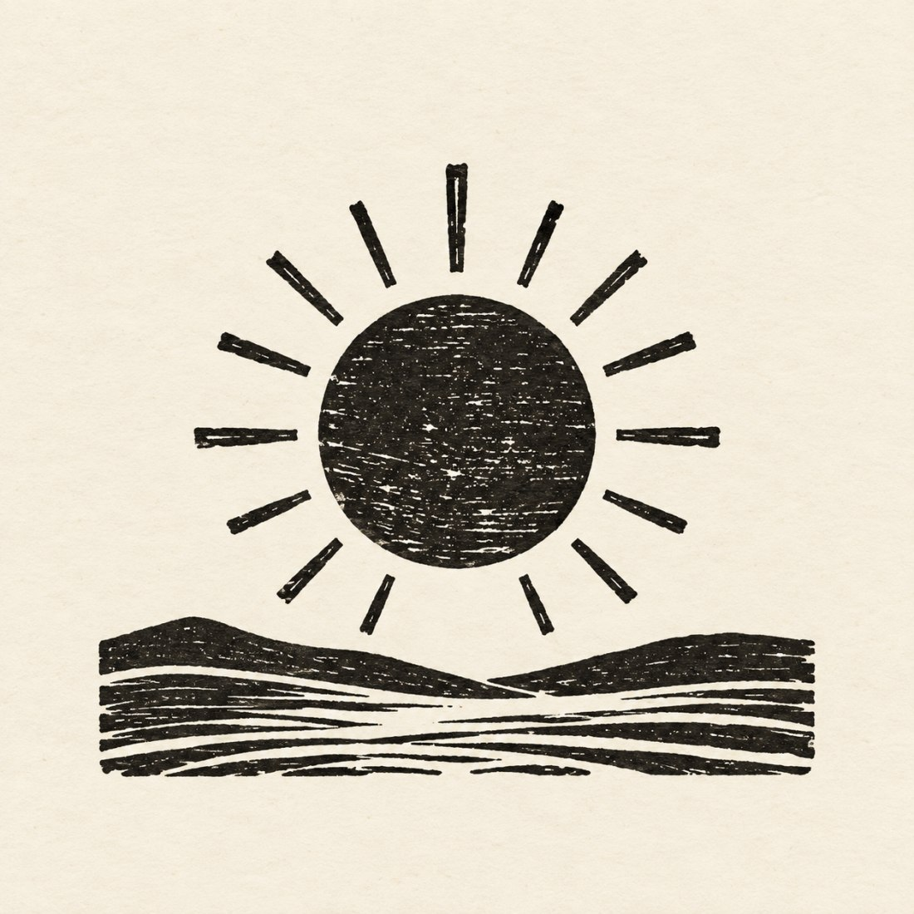
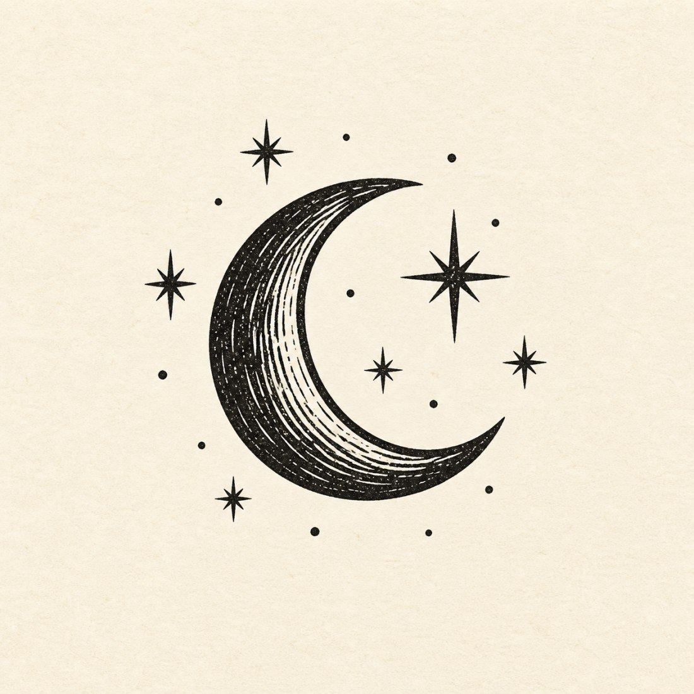
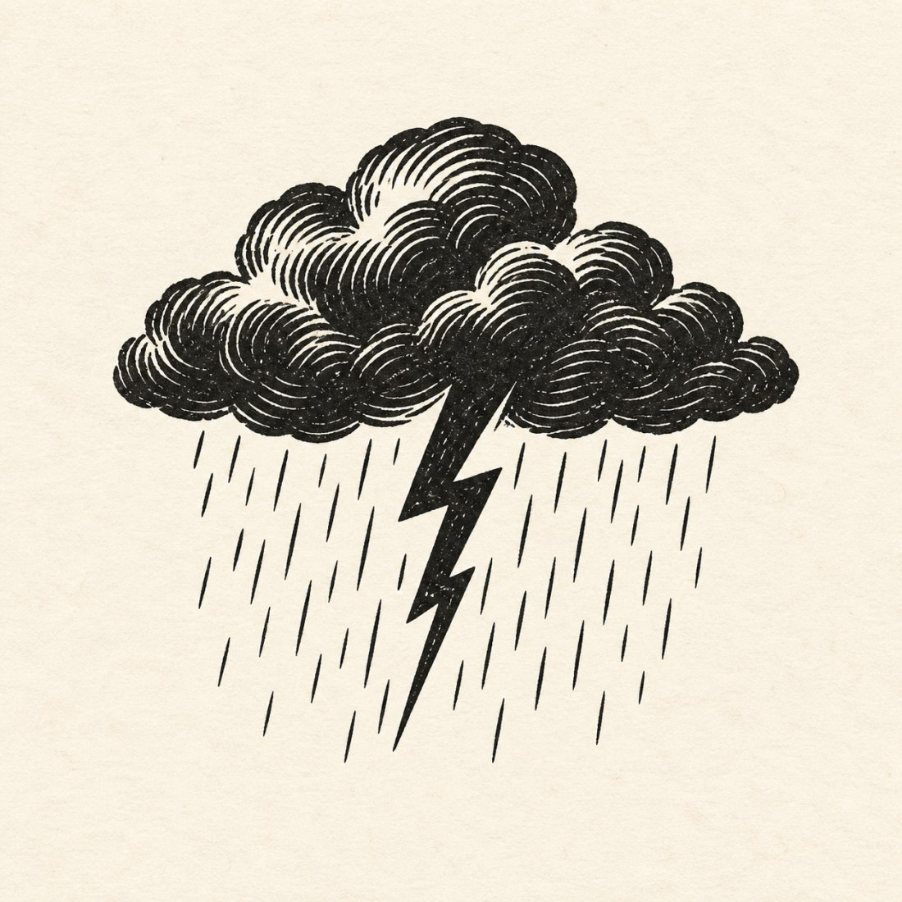

Fenómenos naturales
Exploración de cómo diferentes culturas interpretan y explican los fenómenos naturales.
El Sol
El Sol ha sido relacionado con la vida, el paso del tiempo y el orden del mundo en distintas culturas.

La Luna
La Luna se asoció con los ciclos, la medición del tiempo y las transformaciones visibles en el cielo nocturno.

Tormentas
El trueno, la lluvia y el rayo fueron interpretados como manifestaciones de fuerza, protección, orden o poder divino.
